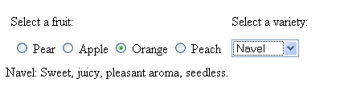

This tutorial shows you how to use Project Dynamic Faces to add Ajax capabilities to JavaServer Faces components.
Project Dynamic Faces allows you to add Ajax functionality to any of the JavaServer Faces UI components that you already use. You don't need to modify components or rewrite any of your application code to give your applications the benefits of Ajax. Neither do you need to write extra JavaScript code in most cases, because Dynamic Faces provides its own set of JavaScript libraries that implement the Ajax functionality for you. At the same time, Dynamic Faces ensures that the powerful component model and specialized life cycle that are unique to JavaServer Faces technology continue to work as expected.
The purpose of Ajax is to allow you to asynchronously update only part of a page in response to user-initiated events rather than expect the user to wait for a full-page refresh. The way Dynamic Faces achieves this while allowing you to take advantage of the JavaServer Faces component model and life cycle is by providing the following features:
ajaxZone, which you use
to identify the parts of the component tree that you want the Ajax
functionality to update.
The more commonly used JavaScript functions supplied by Dynamic Faces include:
fireAjaxTransaction: When invoked, this function
initiates an Ajax request with a set of options indicating which
components should experience asynchronous updates.
installDeferredAjaxTransaction: Installs a fireAjaxTransaction
function onto a DOM element. The invocation of the fireAjaxTransaction
is deferred, meaning that it is invoked only when a certain
user-initiated event occurs.
inspectElement: Goes through elements demarcated
by an ajaxZone tag and identifies which ones should exhibit
Ajax behavior. By default, it will add Ajax behavior to input and
option elements.
The most important server-side objects that take part in handling an Ajax request and constructing and serving an Ajax response include:
PartialTraversalViewRoot: A custom ViewRoot
implementation that represents one part of a component tree that needs
to be asynchronously processed or rendered.
PartialTraversalLifecycle: A custom Lifecycle
implementation that assists the custom ViewRoot
implementation to render the appropriate sub-trees of components at the
correct time.
AsyncResponse: Handles the formatted XML response
that represents the partial update of the component tree.
The following example shows a simple use case of the ajaxZone
tag on a JSP page:
...
<jsfExt:ajaxZone id="zone1" execute="zone1" render="zone2">
<h:selectOneMenu id="country" value="#{ApplicationBean.country}"
valueChangeListener="#{ApplicationBean.updateCapital}">
<f:selectItems value="#{ApplicationBean.countries}"/>
</h:selectOneMenu>
</jsfExt:ajaxZone>
<jsfExt:ajaxZone id="zone2">
<h:outputtext id="capital" value="#{ApplicationBean.stateCapital}"/>
</jsfExt:ajaxZone>
...
The page contains two zones demarcated by ajaxZone
tags. These zones are identified as zone1 and zone2. The first zone includes a selectOneMenu
component with the ID country. The other zone includes an output component
with the ID capital. Assuming you have a managed bean called ApplicationBean that defines
the required properties and handler method, this example allows a user to select a country from
the country component and see the capital of that country asynchronously render in
the capital output component on the page.
Notice that zone1 includes execute and render
attributes. These attributes refer to
groups of phases in the life cycle, as shown by the following figure:
The execute part of the life cycle is executed during a postback. It includes the phases that handle data conversion, validation, and updating of the model object. The render portion, as its name suggests, renders the page as a result of a request for the page. For more information on the JavaServer Faces life cycle, please see The Life Cycle of a JavaServer Faces Page in Chapter 9 of the Java EE 5 Tutorial.
The execute attribute of the zone1 tag is
set to zone1, which means that
the components in this zone must be traversed during the execute
portion of the JavaServer Faces life cycle. The country menu component,
which is included in zone1,
must go through the execute phases because it has a value-change event
registered on it, and the handler for this event needs to update the model
value of the capital output component. Therefore, it needs to
go through the update model values phase of the life cycle.
The render attribute of the zone1 tag is
set to zone2, which means
that the components in zone2 must be re-rendered after the
components in
the zone1 tag have executed. This is so the capital
component displays the new
capital value when the page is re-rendered.
The following figure illustrates how this page is processed:

The following steps outline what's happening in this figure and explain how the JavaScript functions and APIs play a part in ?Ajaxifying? the components:
ajaxZone tag automatically
inserts into the page some JavaScript that inspects the DOM elements
contained within the zone so that they will fire Ajax requests when
activated.
fireAjaxTransaction
function attached to the menu component is invoked. The JavaScript code
inserted into the page in step 1 now ensures that the Ajax request is
sent to the server in such a way that the life cycle can properly
perform its tasks. These tasks include restoring the state of the
current view and updating the country component's value with
the request data.
PartialViewRoot instance is at the root of the partial
tree of components sent with the Ajax request. In this case, the tree
contains the country component. Together, the PartialViewRoot
and PartialTraversalLifecycle objects guide the country
component through the execute phases of the life cycle so that its
handler method can update the model value of the capital
component.
AsyncResponse
instance, the PartialViewRoot constructs an Ajax response,
which consists of some XML that contains the new value of the capital
component, and sends the response to the client.
Before you can use Project Dynamic Faces with your JavaServer Faces application, you need to do three things:
If you are using the blank applications (blank-jsp or blank-facelets) provided by the Dynamic Faces distribution to build your application, you do not need to perform these tasks because they are already done for you. The blank applications are located in the code/run-time/samples/ directory of your workspace. Building and Running the Example Application gives instructions on how to obtain and build the workspace.
At the heart of Dynamic Faces are the custom Lifecycle and ViewRoot implementations. To make the JavaServer Faces technology runtime aware of the custom Lifecycle object, you must tell the FacesServlet instance about the object using an initialization parameter in your deployment descriptor:
<servlet>
<servlet-name>Faces Servlet</servlet-name>
<servlet-class>javax.faces.webapp.FacesServlet</servlet-class>
<init-param>
<param-name>javax.faces.LIFECYCLE_ID</param-name>
<param-value>com.sun.faces.lifecycle.PARTIAL</param-name>
</init-param>
<load-on-startup>1</load-on-startup>
</servlet>
The custom ViewRoot is automatically installed in the system by the JavaServer Faces runtime, so you don't need to configure it.
Project Dynamic Faces depends on the following JAR files to be available in the WEB-INF/lib directory of the web application class loader:
To use Dynamic Faces in your page, you need to declare the Dynamic Faces tag library in the page and include the necessary scripts in your page. You should also set the prependId of your form tag to false for reasons explained in this section.
<%@ taglib prefix="jsfExt"
uri="http://java.sun.com/jsf/extensions/dynafaces" %>
<jsfExt:scripts />The scripts tag renders the <script> elements for the JavaScript technology files that Dynamic Faces provides. If you are using the ajaxZone tag, you do not need to add the scripts tag. When you include the ajaxZone tag in a page, the necessary scripts are automatically included in the page as well.
<f:view> ... <h:form prependId="false" id="form"> ... </h:form> ... </f:view>By setting the prependId attribute to false, you can refer to component IDs without prepending the form's ID. When you work with Ajax, you need to refer to client IDs quite often. With prependId set to false, you can simply refer directly to the client ID, thereby reducing the size of Ajax transactions and avoiding extra typing.
This tutorial demonstrates these features with a simple example that uses Dynamic Faces to allow users to do the following:
The following figure shows a screenshot of the example:
If you were using plain JavaServer Faces technology without Dynamic Faces, you would need to add a button to update the varieties menu and the variety description, and you would have to go through a full-page refresh to do the update. With Dynamic Faces, you can get rid of the button and rely on the underlying infrastructure of Dynamic Faces to do the work of updating the appropriate components using Ajax.
http://server:server-port/tutorial/This page has a list of links that take you to pages that demonstrate different Dynamic Faces Features.
<f:view>
...
<h:form prependId="false" id="form">
...
<h:panelGrid columns="2" cellpadding="4">
<h:outputText value="Select a fruit:"/>
<h:outputText value="Select a variety:"/>
<h:selectOneRadio id="fruit" value="#{fruitInfoBean.fruit}"
onclick="DynaFaces.fireAjaxTransaction(this, { execute: 'fruit'});"
valueChangeListener="#{fruitInfoBean.changeFruit}">
<f:selectItems value="#{fruitInfoBean.fruits}"/>
</h:selectOneRadio>
<h:selectOneMenu id="variety" value="#{fruitInfoBean.variety}"
onchange="DynaFaces.fireAjaxTransaction(this, { execute: 'variety' });"
valueChangeListener="#{fruitInfoBean.updateVariety}">
<f:selectItems value="#{fruitInfoBean.varieties}"/>
</h:selectOneMenu>
</h:panelGrid>
<h:outputText id="varietyInfo" value="#{fruitInfoBean.varietyInfo}" />
</h:form>
...
</f:view>
As the preceding markup shows, the fruit component has an onclick JavaScript event attribute, and the variety component has an onchange JavaScript event attribute. These attributes are set to a fireAjaxTransaction function call. When the user clicks one of these components, the following happens:
To tell the fireAjaxTransaction function how to produce the Ajax request, you pass a set of parameters to it. Here is the call to fireAjaxTransaction from the fruit component:
DynaFaces.fireAjaxTransaction(this, { execute: 'fruit'});
In the case of the preceding example, you pass two parameters to the fireAjaxTransaction function. The this parameter is a JavaScript reference to the DOM element that represents the fruit component in the rendered markup generated by the fruit selectOneRadio tag.
The other parameter is a kind of JavaScript Object known as an associative array, in which the keys are strings and the values are whatever you want them to be. Each key/value pair represents an option that you pass to the fireAjaxTransaction function. These options tell Dynamic Faces which parts of the component tree it needs to process and re-render using Ajax.
The Dynamic Faces JavaScript Library Reference includes the complete list of acceptable options. In this case, the only option is execute: 'fruit', which says that the fruit component (and its children, if it has any) must go through the execute portion of the JavaServer Faces life cycle. This part of the life cycle includes the phases responsible for converting and validating data, updating model values, and handling action events.
On the server side, the changeFruit method of FruitInfoBean responds to the value-change event registered on the fruit component. This method performs model updates of other components in the tree, just as it does in any regular JavaServer Faces application. Therefore, the fruit component must go through the execute phase of the life cycle so that these updates can occur. The following code snippet shows the changeFruit value-change event handler method. As you can see, there is nothing different you have to do in this method or any other part of your server-side code to use Dynamic Faces with your JavaServer Faces application:
public void changeFruit(ValueChangeEvent e){
String fruitValue = (String)e.getNewValue();
String[] varieties = getFruitVarieties(fruitValue);
setVarietyInfo(fruitMessages.getString(varieties[0]));
setVariety(varieties[0]);
...
}
Another common option to pass with the fireAjaxTransaction function is the render option, which you use to indicate which components should be re-rendered when the Ajax transaction is completed. You don't need the render option in this example because you want all components to be re-rendered as a result of this action, which is the default behavior.
Supposing that the user selects Apple from the set of choices in the radio button group, the following happens:
The fireAjaxTransaction call that occurs when a user selects a variety from the variety component works in a similar way. It causes the variety component to go through the execute phases of the life cycle. While this happens, the value-change event listener, updateVariety updates the varietyInfo model value with the description that matches the selected variety. Then Dynamic Faces re-renders the varietyInfo component with the new description.
As the previous section explained, you can use fireAjaxTransaction to asynchronously update individual components. Although the tutorial application uses this function in combination with a user-initiated event, you can use the fireAjaxTransaction in non-event-driven situations when you include it inside the script elements in the page. In this situation, the function is called immediately rather than in response to a user-initiated event.
The installDeferredTransaction function is an extension of the fireAjaxTransaction function. Rather than executing immediately, the installDeferredTransaction function installs a fireAjaxTransaction onto a DOM element that will be called when a specified event occurs on that DOM element.
One situation that calls for usage of installDeferredTransaction is when you want to install a deferred Ajax transaction on a piece of markup generated by a component rather than on the entire component. For example, the Java Blueprints team provides a table scroller component that generates a set of <a> tags in which each tag points to a different set of tabular data in the same table, thereby allowing a user to page through the data set by clicking on a link represented by an <a> tag. Because the page author does not know when authoring the page what <a> tags will be rendered from the component, she cannot install Ajax transactions on these elements. Instead, she can write some JavaScript that will install deferred Ajax transactions on these elements during script execution time, which occurs after the <a> tags are already rendered.
The tutorial application demonstrates a simpler use case of installDeferredAjaxTransaction in which the function installs deferred Ajax transactions on input tags that are rendered from a selectOneRadio component. In this case, the application asks the user to select the correct option to win a prize. If the user selects the correct option, the application displays the message, ?You are correct. Get 20% off Peaches at Duke's Fruit Stand. Use coupon number GTH056.?
The following code from the installDeferred.jsp page of the application shows the tag representing the fruitQuiz component from which the user selects the correct answer, the answerMessage component tag that displays the message, and the script that installs the deferred Ajax transaction.
...
<h:form...>
...
<h:outputText value="Select the true statement to win a prize:"/>
<h:selectOneRadio id="fruitQuiz" value="#{fruitInfoBean.fruitQuiz}"
layout="pageDirection" valueChangeListener="#{fruitInfoBean.gradeFruitQuiz}">
<f:selectItem itemLabel="Peaches originate from China" itemValue="peaches"/>
<f:selectItem itemLabel="Apples sink in water" itemValue="apples"/>
</h:selectOneRadio>
<h:outputText id="answerMessage" value="#{requestScope.answerMessage}" />.
</h:form>
...
<script>
var trueValue = null;
trueValue = document.getElementById("fruitQuiz:0");
DynaFaces.installDeferredAjaxTransaction(trueValue, 'click',
{execute: 'fruitQuiz', render: 'answerMessage' });
</script>
When the preceding page is rendered, the first choice from the selectOneRadio component will be rendered as an input tag with the ID fruitQuiz:0. The first choice is the correct answer, so when the user selects it, the installed deferred Ajax transaction is fired. When this happens, the fruitQuiz component goes through the execute phase of the life cycle, during which time the gradeFruitQuiz value-change event listener method executes. If the user selected the correct value, this method sets the model value of the answerMessage component to the ?winning? message:
public void gradeFruitQuiz(ValueChangeEvent e) {
String answer = (String)e.getNewValue();
String answerMessage = null;
if (answer.equals("peaches")) {
answerMessage =
"You are correct. Get 20% off Peaches at Duke's Fruit Stand. " +
"Use coupon number GTH056.";
}
FacesContext.getCurrentInstance()
.getExternalContext()
.getRequestMap()
.put("answerMessage", answerMessage);
}
If the user selects the false option, the fruitQuiz component is not executed and no message will display.
If you have a group of one or more components that you want to be asynchronously updated at the same time as a result of the same user-initiated event, you wrap the component tags on the page with the ajaxZone tag. The ajaxZone tag supports several attributes that allow you to customize its behavior. This section gives simple examples of using the execute, render, and inspectElement attributes. Refer to the Dynamic Faces Tag Library documentation for more information on the complete set of attributes supported by the ajaxZone tag.
The following piece of a JSP page shows a simple use of the ajaxZone tag.
<jsfExt:ajaxZone>
<h:selectOneMenu id="fruit" value="#{fruitBean.selectedFruit}">
valueChangeListener="#{fruitBean.updateFruit}">
<f:selectItems value="#{fruitBean.fruits}"/>
</h:selectOneMenu>
<h:outputText id="fruitMessage" value="#{fruitBean.fruitMessage}"/>
</jsfExt:ajaxZone>
This example lets the user select an item from the menu, causing a message to render asynchronously to the output component tag. Because this example does not set any attributes on the ajaxZone tag, it will exhibit the default behavior, which is that all input components in the zone will execute as a result of an onclick event and all components in the zone will be asynchronously rendered as a result of the event. The updateFruit value-change event listener updates the model value of the fruitMessage component so that when it is re-rendered, the appropriate value is displayed on the page.
Most examples that use the ajaxZone tag will likely have multiple zones in one page. The way to get actions on one zone to affect the components in other zones is to use the execute and render options. The zones.jsp page of the tutorial application does the same thing as the fireAjaxTx.jsp page, but it does it using ajaxZone tags instead of attaching fireAjaxTransaction calls directly onto the components:
<h:form prependId="false" id="form">
...
<h:panelGrid columns="2" cellpadding="4">
<h:outputText value="Select a fruit:"/>
<h:outputText value="Select a variety:"/>
<jsfExt:ajaxZone id="zone1" execute="zone1" render="zone2,zone3">
<h:selectOneRadio id="fruit" value="#{fruitInfoBean.fruit}"
valueChangeListener="#{fruitInfoBean.changeFruit}">
<f:selectItems value="#{fruitInfoBean.fruits}"/>
</h:selectOneRadio>
</jsfExt:ajaxZone>
<jsfExt:ajaxZone id="zone2" execute="zone2" render="zone3">
<h:selectOneMenu id="variety" value="#{fruitInfoBean.variety}"
valueChangeListener="#{fruitInfoBean.updateVariety}">
<f:selectItems value="#{fruitInfoBean.varieties}"/>
</h:selectOneMenu>
</jsfExt:ajaxZone>
</h:panelGrid>
<jsfExt:ajaxZone id="zone3">
<h:outputText id="varietyInfo" value="#{fruitInfoBean.varietyInfo}" />
</jsfExt:ajaxZone>
</h:form>
This page has three zones demarcated using the ajaxZone tag. The first zone, zone1, contains the fruit radio button group component. The second zone, zone2, contains the variety menu component. And the third zone, zone3, contains the varietyInfo output component.
Notice that the zone1 tag sets the execute attribute to zone1. It also sets the render attribute to zone2,zone3. When the user selects a fruit from the radio button group, the fireAjaxTransaction method executes with the execute and render options given by the tag. Because the execute attribute specifies zone1, only the components in zone1 will go through the execute phases of the life cycle. The render attribute specifies all three zones, and so all three zones will re-render when the Ajax transaction completes.
As shown in the markup for zone2, when the user selects a variety from the variety menu, the variety component will go through the execute phases of the life cycle, and zone2 and zone3 will be re-rendered when the Ajax transaction completes.
Of course, you can implement this example by attaching fireAjaxTransaction calls to the fruit and variety components, as shown in Updating Single Components Using the fireAjaxTransaction Function. This is because there is only one component in each zone. If you have multiple components that you want to be executed or rendered as a result of the same event then you would use ajaxZone tags.
When a page containing ajaxZone tags is first rendered, the inspectElement function executes on all of the child elements of a zone. It identifies the elements contained in the zone that should initiate an Ajax transaction when the zone's specified event occurs. By default, the inspectElement function identifies input, option, and button elements. To change this behavior, you can use the inspectElement attribute of the ajaxZone tag along with a custom inspectElement function to specify which elements in the zone you want to initiate an Ajax transaction as a result of the zone's default event, which is onclick.
The inspectElement.jsp page of the tutorial example includes a button in zone2 that, when clicked, renders the fruitSale component in zone3. The fruitSale component displays special offers for the fruit variety that the user has selected from the variety menu. Here are zone2, zone3, and the custom inspectElement function from the inspectElement.jsp page:
...
<jsfExt:ajaxZone id="zone2" execute="zone2" render="zone2,zone3"
inspectElement="inspectElement">
<h:selectOneMenu id="variety" value="#{fruitInfoBean.variety}"
valueChangeListener="#{fruitInfoBean.updateVariety}">
<f:selectItems value="#{fruitInfoBean.varieties}"/>
</h:selectOneMenu>
<h:commandButton id="specials" value="See Special Offers"
actionListeners="#{fruitInfoBean.specialsSubmit}"
onclick="DynaFaces.fireAjaxTransaction(this,
{execute: 'specials', render: 'fruitSale'});"/>
</jsfExt:ajaxZone>
...
<jsfExt:ajaxZone id="zone3">
...
<h:outputText id="fruitSale"
style="color: maroon; font-family: Arial; font-weight: bold; font-size: medium"
value="#{fruitInfoBean.fruitSaleValue}"/>
</jsfExt:ajaxZone>
<script type="text/JavaScript">
<!--function inspectElement(element) {
var result=false;
if (null != element) {
var tagName = element.nodeName;
if (null != tagName) {
if (-1 != tagName.toLowerCase().substring("option")) {
result = true;
}
}
}
return result;}--></script>
As shown in the preceding markup, the zone2 tag includes an inspectElement element that refers to the inspectElement JavaScript function at the end of the page. This function says that only option elements from this zone should fire Ajax transactions when the zone is activated. This is because the commandButton component fires its own Ajax transaction, which results in different behavior, so the input element representing this component should not be included in the list of elements that inspectElement identifies as those that participate in the Ajax transaction generated by events occurring in the rest of the zone.